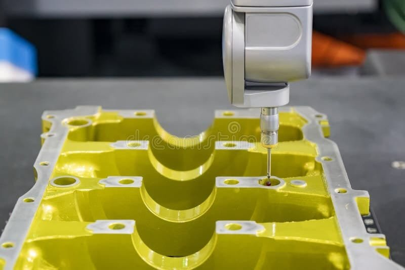

Section 08 • Outcomes

The Standard
Industry 4.0
Quality Assurance
Bridging precise computer vision with GenAI reasoning delivers a complete, end-to-end smart manufacturing solution.
100%
Full Automation
Fully automates the visual inspection pipeline, ensuring consistent, 24/7 quality assurance.
>95%
Enhanced Accuracy
Improves micro-defect detection, eliminating physical fatigue and subjective errors of human inspection.
30%↓
Cost & Safety Impact
Catching flaws early reduces operational costs, enhances end-user safety and prevents product recalls.
360°
Industry 4.0 Standard
A complete smart-manufacturing loop: detect, diagnose, report, act.
13